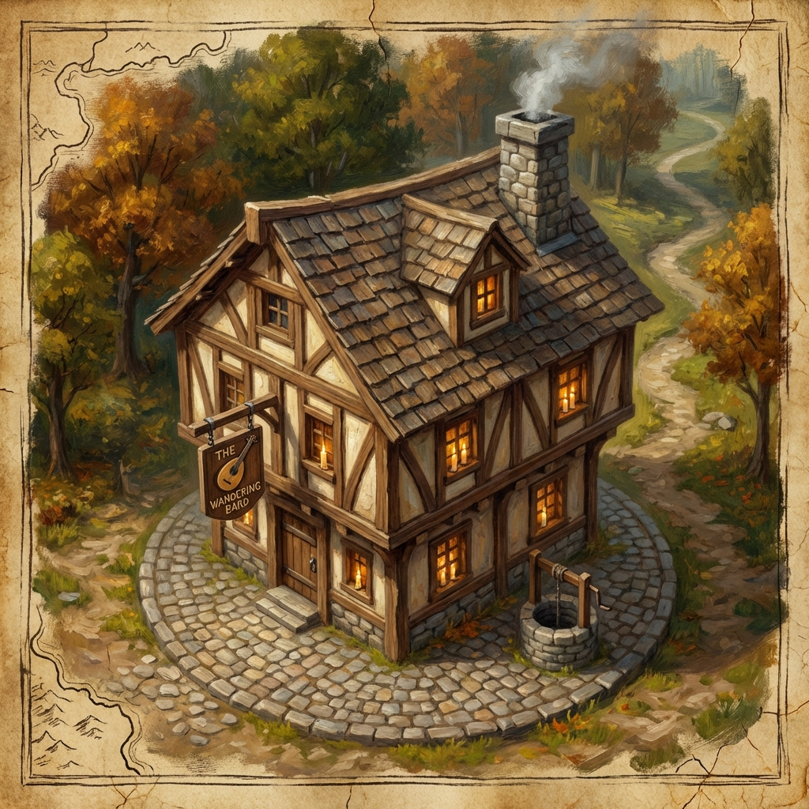

🍺 The Sage's Quill
A quiet tavern catering to Varkenbluff's intellectuals
Overview
The Sage's Quill is a quiet, plush tavern that caters to the city's academics and intellectuals. Located next to the Museum of Natural History and less than a mile from Varkenbluff University, it serves as a meeting place for scholars, researchers, and—on occasion—operatives receiving mission briefings.
The heist team first met Dr. Cassee Dannell here to discuss the Murkmire Stone assignment.
Location
Physical Details
Exterior
An unassuming storefront with a hand-painted sign depicting a feathered quill and open book.
Interior
- Plush velvet seating in booths with high backs (for privacy)
- Bookshelves lining the walls
- Quiet atmosphere; no rowdy patrons
- Warm fireplace
- Tables sized for discrete conversations
Ambiance
| Sense | Description |
|---|---|
| Sight | Warm candlelight; leather-bound books; patrons reading or conversing quietly |
| Sound | Soft murmurs; crackling fire; turning pages |
| Smell | Old paper; pipe tobacco; mulled wine |
⚔️ Session History
- ✓ Initial meeting with Dr. Dannell for Heist 1